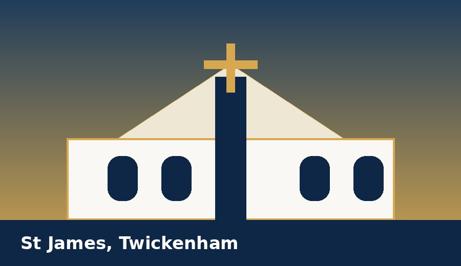

Parish/programme specific; shown only when relevant.
Programme-only
From your parish
Shown after acceptance
St James + Sacred Heart welcome note
Visible only to accepted students in the shared programme.
Local session resources
Shared programme resources plus home-parish resources.
Resource lifecycle
Uploads, publications, archive dates and visibility changes are audit logged.
Find My Parish
Find your parish
Start by postcode, parish name or browse. The system may recommend a parish and show a simple reason, but applicants can override and optionally explain why.
Search by postcode
Recommended: St James
Reason: closest participating parish.
Search by parish name
Browse by programme
Parishes are grouped by participating programme so shared RCIA arrangements are clear.
Shared programme: St James + Sacred Heart RCIA
MVP Active

Church of St James, Twickenham
61 Pope's Grove, TW1 4JZ
Programme note: Adults from St James and Sacred Heart join one shared RCIA journey. Please register under your home parish.
This form goes to the shared St James + Sacred Heart RCIA Administrator.
What happens next?
After registering, you can sign in to see application status and next steps. Pending applicants can edit details until a decision is made. Key-field changes notify the RCIA team.
Children & families
Children's Faith Journey
A light public pathway for parents and guardians interested in First Holy Communion or Confirmation. Detailed workflows are deferred.
Expression of interest
This is not a child registration. It simply lets a parish contact a parent/guardian about future children’s sacramental programmes.
Routing and retention
Parent interest is routed to the parish authorised contact for MVP, with confirmation shown and emailed. Records are retained for a configurable period, default 12 months, then deleted or anonymised if not converted.
Register a child
Child registration options are coming
This area will allow parents and guardians to register children for First Holy Communion, Confirmation and other parish formation programmes.
👨👩👧
Parent / guardian account
Create one account to manage one or more children.
🍞
First Holy Communion
Track sessions, milestones and parish messages.
🕊️
Confirmation
Register a young person for Confirmation preparation.
Coming in a later prototype
The next design pass should define child details, school year, safeguarding/parental consent fields, sacramental history and parish approval flow.
Required now: name, contact details, home parish, email confirmation and matching password entries. Your account remains pending until approved.
Required now: pathway and basic sacramental status. If unsure, choose “Uncertain”.
Optional at the beginning: sponsor, godparent, supporting document and applicant note details. These contribute to profile completion but do not block registration.
Your application will be reviewed by a Catechist or RCIA Administrator. You can log in to see pending status after submission.
Your application has been submitted and is now pending review.
What happens next: the RCIA team reviews your application, may ask for more information, and will confirm whether you are accepted, waiting listed or declined. You will also receive this basic confirmation by email.
The RCIA team will review your application. You can reply to messages from the team while pending. Parish/programme resources unlock only after acceptance.
Update your own profile information, track due dates set by the RCIA team, and manage supporting documents.
80% complete
Profile checklist
Item
Status
Due
Contact and home parish
Complete
Done
Sacramental background
Complete
Done
Sponsor / godparent details
Needed
15 Jan 2027
Baptism certificate
Needs update
31 Jan 2027
Update profile information
Use this to keep the same core information from registration up to date after approval.
Documents
Upload or replace documents requested by the RCIA team. Due dates are set by the team in programme settings.
Document
Status
Due
Action
Baptism certificate
Needs update
31 Jan 2027
Sponsor form
Not provided
15 Jan 2027
Marriage documentation
If applicable
Pastoral review
Add document
Data requests
Students can request data deletion/removal. Requests are reviewed by the System Administrator or authorised data role, with relevant parish contacts notified before action.
Shared guide
Welcome to New Catholic
A guide for students and the RCIA team explaining the purpose of the app and the RCIA journey it supports.
Published
Purpose of the app
New Catholic helps people explore the Catholic faith and, where appropriate, take part in a parish RCIA programme with clear next steps.
For students, the app brings together sessions, preparation, attendance, messages, resources, documents and milestone invitations. For the RCIA team, it keeps applications, people, sessions, milestones, resources and pastoral notes in one place.
How to use it
Students can track what is coming next and respond to session or milestone invitations.
The RCIA team can send application links, manage people, prepare sessions and record attendance.
Both students and admins can use the shared guides to understand the journey and the meaning of key milestones.
What RCIA is
RCIA means the Rite of Christian Initiation of Adults. In some places, especially in the United States, the same process is now often called OCIA: the Order of Christian Initiation of Adults. In this prototype, RCIA is retained because it is the term currently used by the parish team.
The process is for adults, and children of catechetical age, who are seeking baptism, reception into full communion with the Catholic Church, or completion of initiation through confirmation and Eucharist. It is not just a course of lessons; it is a gradual journey of prayer, formation, discernment, parish life and sacramental preparation.
The Second Vatican Council called for the adult catechumenate to be restored as a process with several distinct steps, a suitable period of instruction, and sacred rites celebrated at successive points. The Church also teaches that sacraments nourish, strengthen and express faith, and that the faithful should be helped to understand sacramental signs clearly.
Typical shape of the journey
Stage
Meaning
Inquiry
A first period of welcome, questions, listening and introduction to the Gospel.
Catechumenate
A deeper period of formation in Catholic teaching, prayer, Scripture, worship and parish life.
Purification and Enlightenment
A more focused period, often in Lent, of prayer, reflection and preparation for the sacraments.
Sacraments of Initiation
Baptism, confirmation and Eucharist are celebrated where appropriate, often at the Easter Vigil.
Mystagogy
A period after initiation for reflecting on the sacraments and living as part of the parish community.
What students can expect
The programme supports people at different starting points. Some may be unbaptised. Some may already be baptised in another Christian tradition. Some may be baptised Catholics seeking confirmation or first Eucharist.
The RCIA team will help each person understand their pathway, the documents needed, the preparation expected and the milestones that apply.
Source notes
This guide has been drafted from Catholic Church source material, especially Vatican material on the restored adult catechumenate and sacramental formation.
Sacraments of Christian initiation: baptism, confirmation and Eucharist.
Shared guide
RCIA Milestones and Preparation
A short guide for students and the RCIA team. It explains the main milestones and why preparation matters.
Published
What milestones mean
Milestones are important public steps in the RCIA journey. They mark movement from one stage of preparation to the next and help the parish community pray with and support those preparing to become Catholic.
They are not treated as exams. They are moments for the Church, the candidate and the RCIA team to recognise readiness, commitment and continuing formation.
Common milestones
Milestone
Significance
Rite of Acceptance
The person is welcomed into a more formal period of formation.
Rite of Election
The Church recognises readiness to enter final preparation for the Easter sacraments.
Easter Vigil / Sacraments of Initiation
Baptism, confirmation and first Eucharist are celebrated where appropriate.
Mystagogy
New Catholics continue reflecting on sacramental life and belonging in the parish.
What being prepared means
Being prepared means a person is engaging honestly with the journey, attending as steadily as circumstances allow, asking questions, praying, and beginning to understand the commitment they are making.
It also means the RCIA team has no unresolved pastoral or practical concern that should be discussed before the next milestone.
Practical next steps
Attend required sessions and respond to invitations.
Read any preparation set by the catechist.
Speak with the RCIA team or sponsor when something is unclear.
Keep profile and document information up to date.
Add milestone dates to your calendar once published.
Internal readiness notes
The RCIA team may record an internal Ready or Not Ready flag for the next milestone. This is for pastoral planning and is not shown as a student-facing judgement. If the team changes someone to Not Ready, a note is required so the reason is clear and can be handled carefully.
Team login
For RCIA Administrators, Catechists, Parish Priests and System Coordinators.
Readiness is an internal RCIA team flag. The default is Ready; changing a person to Not Ready requires a note.
Person
Next milestone
Status
Note
Sarah Johnson
Rite of Election
Ready
Default status.
Daniel Wright
Rite of Election
Ready
Sponsor contact still due, but no readiness concern recorded.
Thomas Evans
Rite of Election
Not Ready
Pastoral conversation needed before invitation is finalised.
Published milestone invitations
Track acceptance and attendance
Rite of ElectionSun 21 Feb · 3:00 PM · Diocesan Cathedral2 accepted2 invitedAttendance not yet held
Person
Home parish
Invitation
Attendance
Action
Sarah Johnson
St James
Accepted
Upcoming
Daniel Wright
Sacred Heart
Accepted
Upcoming
Aisha Brown
St James
Invited
Upcoming
Thomas Evans
Sacred Heart
Invited
Upcoming
Rite of AcceptanceSun 23 Nov · 11:00 AM · St James Church4 accepted4 present
Person
Home parish
Invitation
Attendance
Action
Sarah Johnson
St James
Accepted
Present
Daniel Wright
Sacred Heart
Accepted
Present
Aisha Brown
St James
Accepted
Present
Anthony Brown
Sacred Heart
Accepted
Present
Attendance Register
Attendance
Select a session first, then record or review attendance for that specific session.
Today
Who is Jesus? Thu 1 Oct · Sacred Heart · 7:00–8:30 PM
4 accepted2 pending review
Upcoming
The Sacraments Thu 8 Oct · St James Hall · 7:00–8:30 PM
4 acceptedNo register yet
Recent
Welcome and Introduction Thu 24 Sep · St James Hall
3 present1 absent
Choose a session to open the register
Attendance records are session-specific. This keeps the page focused on the action the team needs to complete: select the session, review self-certifications, mark attendance, and save.
Selected session attendance register
4 accepted students · 2 self-certifications pending review · 1 absence concern flag
Student
Home parish
Self-certification
Team action
Programme record
Sarah Johnson
St James
Received Optional note included
Self-certified pending review
Daniel Wright
Sacred Heart
Received
Self-certified pending review
Aisha Brown
St James
—
Not recorded
Thomas Evans
Sacred Heart
—
Absent
Quick actions
Attendance updates save immediately.
Settings
Attendance mode, audit rules and student visibility guidance are held in Settings → Information.
Communications
Manage student messages, resource links, session materials and communication templates.
Compose message
Recent communications
Subject
Channel
Audience
Session reminder
In-app + email
All students
Document guidance
In-app
Selected students
Resource library
Resource
Type
Category
Visibility
RCIA Participant Handbook
PDF
Session Materials
Published
Session 4 — The Sacraments
Google Drive
Session Materials
Published
What is the Eucharist?
YouTube
Faith Formation
Published
Settings
Programme configuration and reference information. Keep operational pages focused; detailed rules live here.
Only one Active programme year per parish/shared programme. Draft next year can be prepared before current programme closes.
Attendance setup
Session reminders are sent 24 hours before each session by default. The RCIA Admin team can change that lead time here. Self-certification default: 48 hours. Review requirement is set during programme setup.
Content governance
Catechists can draft and publish milestones/resources. RCIA Administrator controls resource removal and global Explore visibility.
Information tab: process rules and visibility
Reference only
Topic
Rule
Application edits
People with Applied status can edit submitted details until the RCIA team moves them to Participant or Waiting List.
Application change summary
Change summaries are available to RCIA Administrator and Catechist as reference information, not as operational clutter on the Applications page.
Home parish changes
Changing home parish while pending requires a note and notifies RCIA Administrator, Catechist and previous/new home parish contacts.
Attendance amendments
RCIA Administrator and Catechist can amend saved attendance. Reason is optional and changes are audit logged.
Student attendance visibility
Student sees latest status, updated timestamp and optional reason if one was entered.
Parish Priest visibility
Parish Priest sees programme-level attendance percentage only, not detailed attendance reports.
Self-certification review
RCIA Administrator or Catechist approval is required only when attendance approval is configured as required.
Retention defaults
Student read-only access default 6 months after closure. Summary data retained by default unless configured otherwise. GDPR principles apply.
High-severity confirmations
Safeguarding/privacy role model, data deletion/anonymisation and child journey retention remain items to confirm before launch.
Messaging Centre
Compose message
Recent messages
Subject
Channel
Session reminder
In-app + email
Document guidance
In-app
Resources
Manage resources and external links for the RCIA team.
Manage quotes, articles and helpful links used on public welcome pages.
Title
Type
Status
Matthew 11:28
Quote
Published
Welcome to New Catholic
Guide
Published
System Admin
Video Library
Add or remove external video links used as Featured content and on Explore pages. Videos are linked from YouTube or another host; they are not stored in New Catholic.
This role provides read-only oversight of RCIA programme activity, participants, attendance summaries, milestones and reports.
✓ Programme overview
✓ Participant and readiness summaries
✓ Attendance summaries
✓ Reports
Parish Priest · Read-only
Parish oversight
Parish Priest access is read-only and excludes sensitive sacramental/application details.
Programme status
Active
Parish-owned participants
4
Upcoming key milestone
Rite of Election
Attendance
Overall programme percentage only.
Visible reports
Participant status, milestone/readiness and parish ownership summaries. No detailed attendance or student/team messages in MVP.
Contact
Contact
Prototype contact page for parish and programme enquiries.
Privacy
Privacy and data handling
Application, participant, document, attendance and message data is scoped to the relevant parish/programme roles. Detailed guidance remains in Settings > Information.